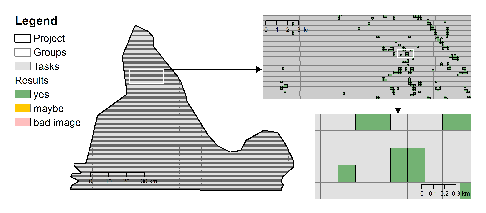

Data Model¶
The MapSwipe crowdsourcing workflow is designed following an approach already presented by Albuquerque et al. (2016). Four concepts are important in the following: projects, groups, tasks and results.
{kind=link}
Projects¶
A project in MapSwipe is primarily characterized by an area of interest, a set of satellite imagery tiles and a feature type to look for. In addition, each project defines the number of users that are requested to classify each individual satellite imagery tile. Furthermore, background information on the context of the mapping request is provided. The information is uploaded through a web form by project managers.
| Parameter | Description |
|---|---|
| Id | Each project has a unique identifier. This Id will be generated automatically and cannot be chosen by the project manager. |
| Name | Each project has a name, which will be shown in the app. Often project in the same region have similar names, e.g. “Madagascar 1” and “Madagascar 2”. |
| Geometry | A project is characterized by its multi polygon geometry. Thus, projects can theoretically consist of several distinct regions. Nevertheless, most projects focus on a single area. |
| Redundancy | Project managers can define how often each individual task will be classified by MapSwipe volunteers at minimum. For most projects this redundancy is set to three. |
| Imagery Provider | This parameter refers to a provider of a tile map service. For projects of this study imagery is provided by Bing. Tiles of satellite imagery can be obtained from a tile map service endpoint. Each tile can be identified using a quad key representation of its x, y and z coordinates. Tiles are projected in WGS 84 Web Mercator (Auxiliary Sphere). This corresponds to the EPSG code 3857. |
| Project Details | The project details describe the goal and scope of the project. This is visualized in the app and is important to stir the volunteer’s motivations. In general, the project is described by five to ten sentences. |
| Look For | The parameter defines which type of features are mapped in the project. This will be visualized in the mapping interface of the app. For this study, volunteers are always asked to look for buildings only. |
Tasks¶
To create a new mapping task, the overall project extent is split up into many single tasks. Tasks are the smallest unit in the MapSwipe data model. They are derived from the area of interest by gridding it into many small equal-sized rectangular polygons. Each task corresponds to a specific tile coordinate from a tile map service (TMS) using a web Mercator projection as its geographical reference system. Therefore, each task is characterized by a geometry and its tile coordinates, which describe its x, y and z position. For the projects analysed in this project, the tiles for all tasks are generated at zoom level 18. Taking the latitude of each task location into account the satellite imagery has a maximum spatial resolution of ~ 0.6 meter at the equator.
| Parameter | Description |
|---|---|
| Id | Each task can be identified by its Id. The Id is a composition of its position in the corresponding tile map system, which can be described by the x, y and z coordinates. |
| Tile Z | The z coordinate of the tile defines the zoom level. Greater values for z will correspond to higher spatial resolution of the corresponding image. For most regions Bing provides images up to zoom level 18. For aerial imagery or images captured by UAVs even higher z values are valid. |
| Tile X | The x coordinate characterises the longitudinal position of the tile in the overall tile map system taken the zoom level into account. The x coordinates increase from west to east starting at a longitude of -180 degrees. |
| Tile Y | The y coordinate characterises the latitudinal position of the tile in the overall tile map system taken the zoom level into account. The latitude is clipped to range from circa -85 to 85 degrees. The y coordinates increase from north to south starting at a latitude of around 85 degrees. |
| Geometry | Each task has a polygon geometry, which can be generated by its x, y and z coordinates. At the equator the task geometry is a square with an edge length of around 150 metres covering circa 0.0225 square kilometres. Due to the web Mercator projector the task geometry will be clinched with increasing distance to the equator. At the same time the area per task will decrease. |
| Tile URL | The tile URL points to the specific tile image described by the x, y, and z coordinates. Usually, the image has a resolution of 256 x 256 pixels. However, some providers also generate image tiles with higher resolution (e.g. 512 x 512 pixels). |
Groups¶
Single MapSwipe projects can contain up to several hundred thousand tasks. This can pose a challenge to fast and performant communication between clients and server if many volunteers contribute data at the same time. Therefore, groups have been introduced to reduce the amount of client requests on the backend server. Groups consists of several tasks, that will be shown to the user in one mapping session. The grouping algorithm uses the extent of a project as an input and generates chunks of tasks lying next to each other. Each group has a height of three tasks and a width of approximately 40 tasks.
| Parameter | Description |
|---|---|
| Id | Each group can be identified by its Id. |
| Tasks | Each group contains several tasks. The information for all tasks of the group will be stored in an array. |
| Geometry | The group geometry is defined by the union of all assigned task geometries. |
| Completed Count | Once a group has been completely mapped by a volunteer the completed count of the corresponding group will be raised by one. The completed count of the group is used to assess the overall progress of each project. For doing so the completed count is compared to the redundancy required (see Table 2). During the mapping process groups will be served in ascending completed count order. Thus, groups with low completed count will be served first. |
Results¶
Results contain information on the user classifications. However, only “Yes”, “Maybe” and “Bad Imagery” classifications are stored as results. Whenever users indicate “No building” by just swiping to the next set of tasks, no data entry is created. “No Building” classifications can only be modelled retrospectively for groups where a user also submitted at least one “Yes”, “Maybe” or “Bad Imagery” classification.
| Parameter | Description |
|---|---|
| Id | Each result can be identified by its Id. The Id is a combination of task Id and user Id. |
| Task Id | Each result corresponds to a specific task, which can be described by its Id. |
| User Id | Each result is contributed by a specific user. Users can be identified by their Id. |
| Timestamp | The timestamp (in milliseconds since 01-01-1970) provides information on the time the user completed the group and uploaded the result data. Results within the same group are assigned the same timestamp. |
| Result | This parameter describes the given answer. 1 corresponds to “Yes”, 2 corresponds to “Maybe” and 3 corresponds to “Bad Imagery”. Each user can only submit one result per task. |